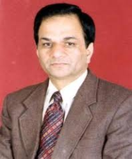
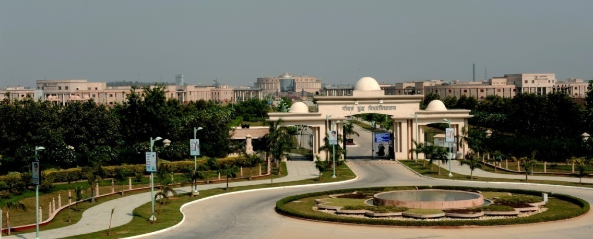
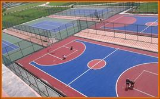
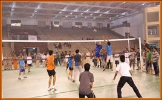
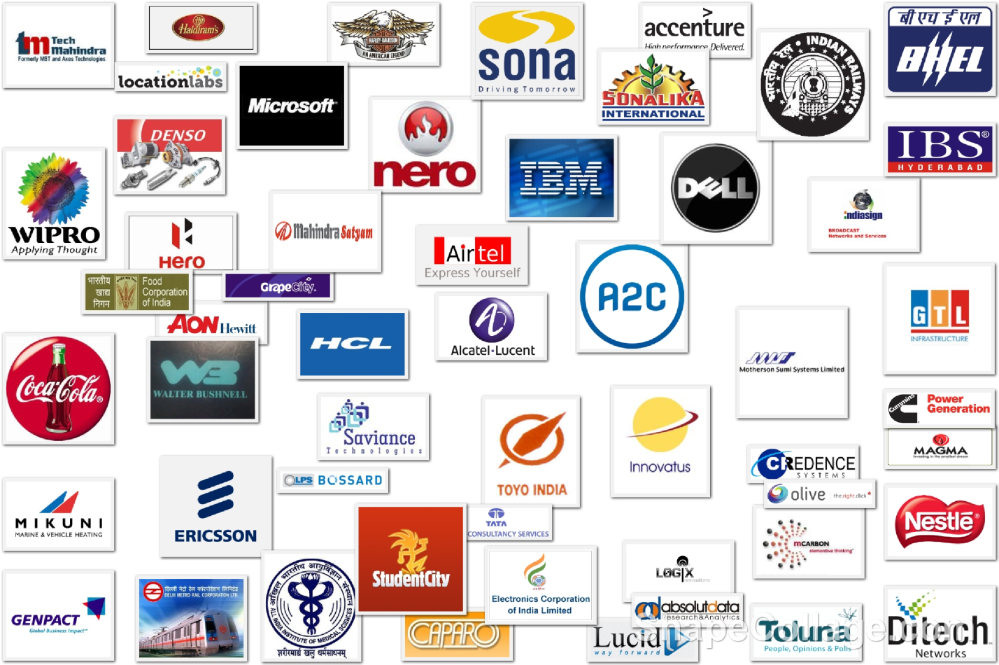

About the University¶
Attention
From the Desk of the Vice-Chancellor
I extend a warm welcome to the young aspirants of the academic session 2016-2017 to Gautam Buddha University.
Gautam Buddha University has continuously been working towards developing world-class human resources to meet global challenges in this new world order. The University offers specialized and customized courses in humanities, social sciences, business, physical, chemical and biological sciences, law, agriculture, applied sciences, and engineering and technology. We have tirelessly been working towards a meaningful contribution in developing a sustainable model for growth, consistency, and significant breakthrough in our education system. We have initiated a new model of Enlightened Education to cater to the needs of the transnational and pluricultural world and serve as a center of excellence in education. The academic programmes have been developed in line with the programmes being offered by leading Universities of India and abroad. The University has set in place academic, counselling and overall support services that I urge you all to take a full advantage of. An effective time management and personal discipline?will be keys to your success during your learning journey at the University. Your expectations and hard work will be given shape and directions by our competent faculty members, drawn from institutions of high repute. Our unconditional commitment to quality and your untiring effort will lead to great learning and greater attainment, which definitely places you in the forward league and makes you ready for your stint in the professional world.
I hope that we together set on a new academic journey and discover joy of learning. I look forward to welcoming you at the campus and consequently celebrating with you accomplishments during this journey. Once again I welcome you all to this new world of opportunities at Gautam Buddha University.
1.0 About the University¶
Gautam Buddha University was established under the Uttar Pradesh Gautam Buddha University Act, 2002 U.P. Act No. (9) of 2002, came into existence in the year 2008. The University is funded by the New Okhla Industrial Development Authority (NOIDA) and the Greater Noida Industrial Development Authority (GNIDA), the undertakings of the Government of Uttar Pradesh. The University envisions to become a globally acclaimed integrated academic and research institution that creates a vibrant community of intellectuals and entrepreneurs endowed with Character, Creativity, Competence and Commitment, who can inspire meaningful transformations to ensure holistic growth and development of the society. The mission of the University is to generate a community of scholars who can manage continuity and change; to seek and incorporate the best practices in teaching and learning from around the world; to inculcate in the learners due appreciation for ethical, ecological and economic issues of knowledge; to provide knowledge based scientific solutions to satisfy the need of society and industry; to ensure an academic environment that guarantees avenues for all historically excluded sections of the society. The University is committed to be a world class centre for excellence in education in the next 10 years.
Campus
Gautam Buddha University has 511 acres lush green campus at Greater Noida beside Yamuna Expressway. The fully residential campus is modeled in line with the best institutions of higher learning across the globe. The campus is located in the vicinity of the Greater Noida city centre and is nearly 38 Km from the national capital territory of Delhi. The University comprises of many buildings which include Administrative building, School buildings with auditoriums and conference rooms (08), 18 hostels, Central Library, Mahamaya Shanti Sarovara (a water body spread over one lac sq.fts area), University Auditorium with 3000 seating capacity, Meditation Centre, Sports complexes, University Health Centre, Bank, ATMs, Post Office, Shopping Complex, one Guest house and Convention Centre with accommodation facility. Residences for all faculty and staff range from type II to type VI along with Vice-Chancellor?s residence.
1.1 Basic Facilities:¶
The University has very strong physical infrastructure in terms of its faculty buildings, sports complexes, hostels, gymnasium, play ground, and a well equipped guest house. Good internal roads, gardens, illuminated campus, class-rooms, laboratories and other amenities, well maintained hostel buildings, make the University a proud place for study. A good library facility with well stocked books, journals, magazines, separate reading and reference sections and modern e-resources with free-access to a large number of e-journals and e-books makes it a very important source of learning.
- Hostels
There are 18 Hostels for Boys and Girls on single occupancy basis in the University. All hostels are equipped with facilities like internet connection, Common Room, T.V. Room, medical room/First aid box, visitor?s room, table tennis room, reading room, indoor games room, gymnasium, badminton court, volleyball court, basketball court etc. All the hostels are supported by the solar system which helps in the supply of hot water during winter. There is one hostel for Married Research Scholars Hostel (MRSH, only for full time Ph. D. students). MRSH consists of two room apartments having all necessary infrastructure. Foreign nationals (married or unmarried) admitted students in various programmes of the University will be given priority for MRSH.
- Cafeteria
Apart from above facilities, University has also equipped with three Canteens in different areas including Open Air Theatre, Shopping Complex and School of Management. Tea & Snacks Kiosks are also operated in some of the School buildings viz. School of Management, School of Biotechnology, School of Vocational Studies & Applied Sciences, School of Engineering and School of Information and Communication Technology.
- University Health Centre
University Health Centre is having dispensary with doctors, nurses, indoor facilities with ambulance and free medication for students. It provides; all first aid medicines, first aid dressing, stitching, injection facilities, Nebulization ECG, Pulse-oxymeter, Blood Sugar check-up, Oxygen cylinder, Weighing machine, Wheel chair, 24 hours emergency Ambulance services. University Health Centre has tie-up with Yatharth Wellness Hospital, Greater Noida. Along with Health Centre the same building also runs Clinical Psychology Laboratory & OPD Services like Mental Health Clinic, Child and Adolescent Clinic, Neuro-psychological Clinic, Mental Retardation and Development Pathology Clinic, De-addiction Clinic and Psychosexual Clinic, on specific week-days. Neighbourhood medical facility- Multi-speciality hospital with 500 bed capacity is located in the vicinity of Gautam Buddha University.
- Facilities like banking, post office, book shops, etc.
| S.N. | Establishment Location | Establishment Location |
|---|---|---|
| 1 | Punjab National Bank, GBU Branch | Shopping Complex, GBU |
| 2 | ATM, Punjab National Bank | Shopping Complex, GBU |
| 3 | ATM, IDBI Bank | Shopping Complex, GBU |
| 4 | Post Office | Shopping Complex, GBU |
| 5 | Stationary Shop | Shopping Complex, GBU |
Transport facilities to cater to the needs of the students and staff:
GBU is a residential campus for both students and staff. However, the University bus is also available which provides need based transport facility to staff and students for educational tours, seminars and conferences.
Facilities for differently-abled persons:
With special consideration for differently-abled persons, the University has provisions for 3% reservation in the admissions. For ?Barrier Free Access? the University has constructed ramps at all Schools/departments, administrative building, central library, hostels and shopping complex . There is a facility of lifts at all schools, administrative building, and central library and a separate wash room facility at the school buildings.
1.2 Central Computer Centre:¶
The Central Computer Centre (CCC) caters to the computational needs of the University and provides access to internet resources as well as telecommunication facilities. The Campus network is carefully planned, keeping in mind options for future expansions. Fiber-optic cabling is used to connect all the major buildings. The Campus is equipped with Wi-Fi connectivity. The CCC has strong IT security infrastructure that protects the University network from outside hackers. Most of the servers are using open Source platform. The Campus Network connects to Departments, Schools and Centers. Network Connectivity is also provided to the remote locations which include s Hostels, Institute Hospital, Main Gate, Guest House, etc. In addition to the above, Computer Centre has started Web-based Email System which enables all the users to access their mailbox from anywhere (inside or outside GBU).?? Connectivity is provided over the campus telephone network using ADSL with installed capacity of 900 lines. GBU has a Campus Network with more than 6000 nodes serving more than 3500 users. The LANs in each area of the network have 10/100/1000 Mbps transmission capacity and are linked through fiber optical cables that are laid all over the campus. Campus has taken 1 Gbps leased lines for Internet connectivity from BSNL.?Bandwidth is distributed to the 6000 nodes in the campus with a Cisco switches, Network security is provided with restricted access lists programmed on the routers and Cisco ASA firewall. The Campus provides its students the necessary technology skills to upgrade or share their knowledge. A robust campus network is provided to every student for accessing internal servers and the Internet. It provides the 24?7 support to the entire campus for any Internet/hardware/Network or other IT related problems. It also provides the technical support for all the e-learning class rooms (Projectors, Audio systems etc.).
1.3 Bodhisattva Dr. Bhim Rao Ambedkar Pustakalaya (Central Library):¶
The library, constructed in approximately 1.78 lacs sqft and spread over five storeys supports the University?s mission to contribute to society through its pursuit of education, learning and research at the highest levels of excellence. It is the soul of academic and research activities of the University. It has huge volume of books and e-journals which cover the disciplines of Management, Computer Science, Information Technology, Biotechnology, Humanities, Social Sciences and other related areas. The library is well-equipped with modern facilities, spacious reading halls and compact stack area, 2000-seating capacity reading hall, reference sections, catalogue area, multiple self supporting loaning counters, and is managed by a highly team of professionals. The Central Library is a fully automated library with libsys and RFID systems.
- Library collection
The collection comprises mainly books, theses, reports, current journals, old volumes, specifications, standards, Video Cassirer, CD/DVD databases etc. The present position of the stock of Library is as follows:
| S. No. | Particulars | Quantity |
|---|---|---|
| Books | 60500 | |
| Journals and Magazines | 6377 (International) & 325 (Indian) | |
| Print Journals and Magazines | 60 | |
| Daily Newspapers | 14 | |
| CD/DVD | 2500 | |
| 6 | Project Report | 1000 |
- E-Resources
Apart from the printed resources, it provides online resources like IEEE, Emerald, EBSCO, ECCH online management cases, CMIE (EIS, Prowess) databases and many other e-journals for scholars and students. The Library is member of Indian National Digital Library in Engineering, Sciences and Technology (INDEST) and UGC-Informed consortium. It has subscribed to many e-journals and sources such as Emerald, EBSCO (Business Source Complete), PROWESS, EIS (Economic Intelligence Service) to name a few. The following electronic resources are used at a high frequency by the faculty members, researcher scholars, and students on campus.
| S. No. | E-Resources Name |
|---|---|
| 1. | Science Direct |
| 2. | EBSCO |
| 3. | AIR Online |
| 4. | SCOPUS |
| 5. | DELNET |
1.4 Sports Facilities:¶
The University promotes multi dimensional growth with emphasis on an integrated physical and intellectual training. The Eklavya Sports Complex spread over 58 acres with indoor and outdoor stadium of global standards, equipped with state-of-the art sports facilities is ready to shape health and sports aspirations of the students. It has an Olympic size swimming pool with an additional practice track and a world class gymnasium. Facilities that comprise games functions and sports facilities are given as under:
 - Playground
The University promotes multi dimensional growth with emphasis on an integrated physical and intellectual training.
The Eklavya Sports Complex equipped with following facilities:
- Swimming Pool with coaches (Swimming (25 X 50 Meter) with
Spectators Arena and Diving Pool with Spectators Arena)
Gymnasium with coaches
Outdoor and Indoor Sports facilities:
| Outdoor Sports | Indoor Sports |
|---|---|
|
|
1.5 Corporate Relations Cell (CRC)¶
CRC acts as an interface between the students, faculty, and the corporate world to initiate continuous interaction with the industry, sharing the industry experiences, and understanding the industry needs. The name of some organizations who visited Gautam Buddha University for placement are: Larsen & Tubro Limited, Cosmic Group, Brentford Services, Enandi, WNS Global Services Pvt. Ltd., Matrix Cellular International Services Pvt. Ltd., S & S Associates, Encyclopaedia Britainica India Pvt. Ltd., Crisil Limited Jeevansathi.com, 99acres.com, RNCOS E-Services Pvt. Ltd., Global Logic, Utpal Solutions Pvt. Ltd., M/s Umbrio Consulting Pvt. Ltd., M/s PropTiger Realty Pvt. Ltd., Tradeindia.com, SCI Group of Companies, T R Sawhney Motors Pvt. Ltd., HomeShop18, Relaxo Footwear Limited, Asteria IT Services, Aakash Institute Study Mate, Ping Telematics Pvt. Ltd, Elcomponics Sales Pvt?Ltd., HDFC Bank Ltd, Edge Executive Search Pvt. Ltd., Carte Blanche Solutions Pvt Ltd, Asbicon Pvt Ltd., Country Club Pvt Ltd., Godrej Infotech, Brick By Brick Propmart Pvt. Ltd., Indus lnd Bank, P C Solutions, DLF Pramerica Life Insurance Co. Ltd., Info Edge India Ltd., HCL Technologies Business Services, ICICI Prudential Life Insurance Co. Ltd., WNS Global Services Pvt. Ltd., Latitude Infratech Pvt. Ltd., IndiaMart InterMesh Ltd., Mercury Solutions Ltd., Myzeal IT Solutions Pvt. Ltd.,?Infosys BPO, Whirlpool of India, Mydala.com. CRC acts as an interface between the students, faculty, and the corporate world to initiate continuous interaction with the industry, sharing the industry experiences, and understanding the industry needs.
- Industry Interface:
In its endeavour to maintain a vibrant & proactive academic industry Interface, the cell invites reputed Industry experts from various industries to interact with its students. Apart from this CRC also organize workshops and seminars with concerned School which enable the students to acquire tremendous sectorial awareness and appreciate application of management theories across different sectors and scenarios.
- Training & Placements:
Corporate Relations Cell has a focused mandate to progressively enhance the synergies between the University & Industry. The cell regularly sending emails to potential organizations, talking to the HR persons on phone and coordinating with concerned School faculty coordinator for student?s resume/data and meeting them regularly to discuss placements.
- Alumni Affairs
CRC maintain the database of Alumni, and resolve their matter related to obtaining degree or any other certificate.
1.6 International Affairs:¶
The University has established an International Affairs Cell and offers a cordial welcome to the International students wishing to join different programmes of the University. The University has created a separate cell to look after the matters related to admission of International Students. The International Students’ Office facilitates all necessary help to International students regarding;
- How to fill application form for admission?
- Course information
- English Remedial Program
- Orientation
- Visa formalities
- Accommodation/Hostels
- Fees and any other issuesT
The Centre coordinates with Indian statutory agencies viz. Indian Council for Cultural Relations (ICCR), Ministry of External Affairs, different embassies and consulates for related various issues including scholarships.
For further details, candidates are advised to visit University website (www.gbu.ac.in) or contact:
The Director, International Affairs Cell
Gautam Buddha University, Greater Noida
Gautam Buddha Nagar- 201312, Uttar Pradesh (India)
Phone: +91-120-2346171/6179 (off), Admission Cell: +91-120-2344244
Fax: +91-1202344215 (Attention Director, International Affairs)
E-mail: directoria@gbu.ac.in, arvinds@gbu.ac.in
1.7 Extra Curricular and Co-Curricular Activities¶
The students of Gautam Buddha University celebrates ABHIVYANJANA (annual cultural event) and SHAURVOTSAVA (annual sports meet) intend to add wings to intellect and imagination of our students. It intends to cultivate creativity among students apart from the University?s core values of excellence. It aims at dissolving the cultural demarcations and facilitating a new School of thought where every student thinks beyond boundaries yet grounded to her/his values. It also provides a platform to the budding professionals and encourages them to think out of the box. The cultural council of the University consists of following clubs:-
- Dramatic Club
- Dance Club
- Music Club
- Debating society/club
- Photography club
- Audio visual education club
- Adventure club
- Art club
- Social Service club
- Hobbies programming
- Robotics club
- Literary club
- SAE GBU college club